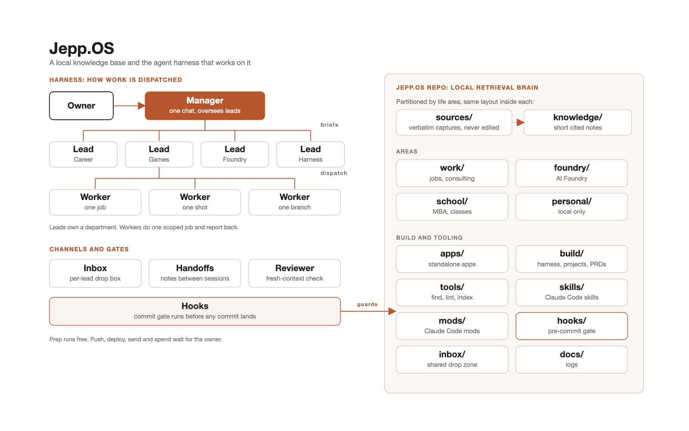

No. 01 · Oct 2026 · updated Nov
agent-jepp-toolkit
A multi-agent operating system for Claude Code: a manager, department leads and workers, with hooks that enforce the rules.
I wanted my agents to move fast without ever pushing work I didn't approve or committing a secret.